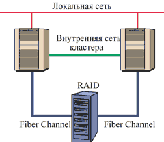
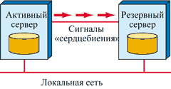
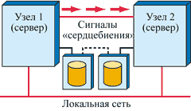
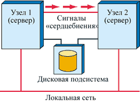

Андрей Борзенко
По мере развития компьютерной техники и ее интеграции в бизнес-процесс предприятий проблема увеличения времени, в течение которого доступны вычислительные ресурсы, приобретает все большую актуальность. Надежность серверов становится одним из ключевых факторов успешной работы компаний с развитой сетевой инфраструктурой, например, электронных магазинов, ведущих продажи через Интернет, крупных предприятий, в которых специальные системы осуществляют поддержку производственных процессов в реальном времени, банков с разветвленной филиальной сетью или центров обслуживания телефонного оператора, использующих систему поддержки принятия решений. Всем таким предприятиям жизненно необходимы серверы, которые работают и предоставляют информацию 24 часа в день семь дней в неделю (24х7х365).
Стоимость поломок и простоя оборудования постоянно растет. Она складывается из стоимости потерянной информации, потерянной прибыли, стоимости технической поддержки и восстановления, неудовлетворенности клиентов и т. д. Имеются методики, позволяющие вычислить стоимость минуты простоя и затем на основе этого показателя выбрать наиболее выгодное решение с наилучшим соотношением функциональности и цены.
Существует немало средств для построения надежной системы. Дисковые массивы RAID, например, позволяют не прерывать обработку запросов к информации, хранящейся на дисках, при выходе из строя одного или нескольких элементов массива. Резервные блоки питания в ряде случаев позволят в какой-то степени застраховаться на случай отказа других компонентов. Источники бесперебойного питания поддержат работоспособность системы в случае сбоев в сети энергоснабжения. Многопроцессорные системные платы обеспечат функционирование сервера в случае отказа одного процессора. Однако ни один из этих вариантов не спасет, если из строя выйдет вся вычислительная система целиком. Вот тут на помощь приходит кластеризация. Пожалуй, первым шагом к созданию кластеров можно считать широко распространенные в пору расцвета мини-компьютеров системы "горячего" резерва. Одна или две такие системы, входящие в сеть из нескольких серверов, не выполняют никакой полезной работы, но готовы начать функционировать, как только выйдет из строя какая-либо из основных систем. Таким образом, серверы дублируют друг друга на случай отказа или поломки одного из них. Но при объединении компьютеров желательно, чтобы они не просто дублировали друг друга, но и выполняли другую полезную работу, распределяя нагрузку между собой. Для этого во многих случаях как нельзя лучше подходят кластеры.
Изначально кластеры использовались для мощных вычислений и поддержки распределенных баз данных, особенно таких, для которых требуется повышенная надежность. В дальнейшем их стали применять для сервиса Web. Однако снижение цен на кластеры привело к тому, что подобные решения все активнее используют и для других нужд. Кластерные технологии наконец-то стали доступны рядовым организациям - в частности, благодаря использованию в кластерах начального уровня недорогих серверов Intel, стандартных средств коммуникации и распространенных ОС.
Кластерные решения на платформах Microsoft ориентированы прежде всего на борьбу с отказами оборудования и ПО. Статистика отказов подобных систем хорошо известна: только 20% из них непосредственно вызвано отказами оборудования, ОС, питания сервера и т. п. Для исключения этих факторов применяются различные технологии повышения отказоустойчивости серверов (резервируемые и заменяемые в горячем режиме диски, источники питания, платы в разъемах PCI и т. д.). Однако 80% оставшихся инцидентов вызваны обычно отказами приложений и ошибками оператора. Кластерные решения - действенное средство для решения этой проблемы.
В ряде случаев привлекательность кластера во многом определяется возможностью построить уникальную архитектуру, обладающую достаточной производительностью, устойчивостью к отказам аппаратуры и ПО. Такая система к тому же должна легко масштабироваться и модернизироваться универсальными средствами, на основе стандартных компонентов и за умеренную цену (несравненно меньшую, чем цена уникального отказоустойчивого компьютера или системы с массовым параллелизмом).
Термин "кластер" имеет множество определений. Одни во главу угла ставят отказоустойчивость, другие - масштабируемость, третьи - управляемость. Классическое определение кластера звучит примерно так: "кластер - параллельная или распределенная система, состоящая из нескольких связанных между собой компьютеров и при этом используемая как единый, унифицированный компьютерный ресурс". Таким образом, кластер представляет собой объединение нескольких компьютеров, которые на определенном уровне абстракции управляются и используются как единое целое. На каждом узле кластера (по сути, узел в данном случае - компьютер, входящий в состав кластера) находится своя собственная копия ОС. Напомним, что системы с архитектурой SMP и NUMA, имеющие одну общую копию ОС, нельзя считать кластерами. Впрочем, узлом кластера может быть как однопроцессорный, так и многопроцессорный компьютер, причем в пределах одного кластера компьютеры могут иметь различную конфигурацию (разное количество процессоров, разные объемы ОЗУ и дисков). Узлы кластера соединяются между собой либо с помощью обычных сетевых соединений (Ethernet, FDDI, Fibre Channel), либо посредством нестандартных специальных технологий. Такие внутрикластерные, или межузловые соединения позволяют узлам взаимодействовать между собой независимо от внешней сетевой среды. По внутрикластерным каналам узлы не только обмениваются информацией, но и контролируют работоспособность друг друга.
Более широкое определение кластера предложили эксперты Aberdeen Group (http://www.aberdeen.com): кластер в их понимании - это система, действующая как одно целое, гарантирующая высокую надежность, имеющая централизованное управление всеми ресурсами и общую файловую систему и, кроме того, обеспечивающая гибкость конфигурации и легкость в наращивании ресурсов.
Преимущества кластеризации
Как уже отмечалось, основное назначение кластера состоит в обеспечении высокого - по сравнению с разрозненным набором компьютеров или серверов - уровня доступности (High Availability, HA), иначе называемого уровнем готовности, а также высокой степени масштабируемости и удобства администрирования. Повышение готовности системы обеспечивает работу критических для бизнеса приложений на протяжении максимально продолжительного промежутка времени. К критическим можно отнести все приложения, от которых напрямую зависит способность компании получать прибыль, предоставлять сервис или обеспечивать иные жизненно важные функции. Как правило, использование кластера позволяет гарантировать, что в случае, если сервер или какое-либо приложение перестает нормально функционировать, другой сервер в кластере, продолжая выполнять свои задачи, возьмет на себя роль неисправного сервера (или запустит у себя копию неисправного приложения) с целью минимизации простоя пользователей из-за неисправности в системе.
Готовность обычно измеряется в процентах времени, проведенном системой в работоспособном состоянии, от общего времени работы. Естественно, различные приложения требуют различной готовности. Готовность системы может быть увеличена различными методами. Какой из них выбрать, решается в зависимости от стоимости системы и стоимости времени простоя. Как правило, более дешевые решения фокусируются в основном на снижении времени простоя после возникновения неисправности. Более дорогие позволяют системе продолжать функционировать и предоставлять сервис пользователям даже в том случае, когда один или несколько ее компонентов вышли из строя. Говорят, что по мере роста готовности системы ее цена увеличивается нелинейно; точно так же, нелинейно увеличивается и стоимость ее поддержки. Относительно низкая стоимость оборачивается не самым высоким уровнем отказоустойчивости - не более 99%. Это означает, что около четырех дней в году информационная структура предприятия будет неработоспособна. На первый взгляд, это не так уж много, если учесть, что сюда входят и плановые простои, связанные с проведением профилактических работ или реконфигурацией. Но клиенту, например, пользователю системы оплаты по кредитным карточкам, безразлично, по какой причине он будет лишен обслуживания. Он останется неудовлетворенным и будет искать другого оператора. Высокая доступность (готовность) подразумевает решение, способное продолжать функционировать либо восстанавливать функционирование после возникновения большинства ошибок без вмешательства оператора. Дорогие отказоустойчивые решения способны обеспечить заветные "пять девяток" - 99,999% надежности системы, что означает не более 5 минут простоев в год.
Золотую середину между едиными серверными системами с зеркалированными дисковыми подсистемами (или дисковыми массивами RAID) и отказоустойчивыми системами обеспечивают кластерные решения. По уровню доступности они приближаются к отказоустойчивым системам при несоизмеримо меньшей стоимости. Такие решения идеальны для случаев, когда можно допустить лишь очень незначительные незапланированные простои.
В случае сбоя кластерной системы восстановлением управляет специальное программное и аппаратное обеспечение. В частности, кластерное ПО позволяет автоматически определить единичный аппаратный или программный сбой, изолировать его и восстановить систему. Специально разработанные подпрограммы способны выбрать самый быстрый способ восстановления и за минимальное время обеспечить работоспособность служб. При помощи встроенного инструментального средства разработки и программного интерфейса можно создавать специальные программы, выявляющие, изолирующие и устраняющие сбои, которые возникают в приложениях, разработанных пользователем.
Другое достоинство кластеризации - обеспечение масштабируемости. Кластер позволяет гибко увеличивать вычислительную мощность системы, добавляя в него новые узлы и не прерывая при этом работы пользователей. Современные кластерные решения предусматривают автоматическое распределение нагрузки между узлами кластера, в результате чего одно приложение может работать на нескольких серверах и использовать их вычислительные ресурсы.
Типичные приложения, эксплуатируемые на кластерах, это:
- базы данных;
- системы управления ресурсами предприятия (ERP);
- средства обработки сообщений и почтовые системы;
- средства обработки транзакций через Web и Web-серверы;
- системы взаимодействия с клиентами (CRM);
- системы разделения файлов и печати.
Как устроен кластер
Итак, кластер объединяет несколько серверов, соединенных между собой специальным коммуникационным каналом, часто называемым системной сетью. Узлы кластера контролируют работоспособность друг друга и обмениваются специфической информацией, например, о конфигурации кластера, а также передают данные между общими накопителями и координируют их использование. Контроль работоспособности осуществляется с помощью специального сигнала heartbeat ("сердцебиение", или "пульс"), который узлы кластера передают друг другу, чтобы подтвердить свое нормальное функционирование. Если в небольших кластерах heartbeat-сигналы передаются по тем же каналам, что и данные, то в крупных системах для этого выделяются специальные линии, так как кластерное ПО должно получать сигнал "сердцебиения" каждого сервера с определенным временным интервалом - в случае его неполучения сервер считается неработающим и кластер автоматически переконфигурируется. Также автоматически разрешаются конфликты между серверами, когда при запуске кластера возникает проблема выбора "ведущего" сервера или группы серверов, задача которых - сформировать новый кластер.
В качестве коммуникационного канала кластера могут использоваться обычные сетевые технологии (Ethernet, Token Ring, FDDI, АТМ), разделяемые шины ввода/вывода (SCSI или PCI), высокоскоростной интерфейс Fibre Channel или специализированные технологии CI (Computer Interconnect), DSSI (Digital Storage System Interconnect) или Memory Channel. DSSI-интерфейс предназначен для доступа к накопителям и для взаимодействия систем между собой. Он похож на мультихостовый протокол SCSI-2, но обладает большей производительностью и возможностью организации взаимодействия компьютеров. DSSI-кластеры поддерживают средства повышения надежности системы, разделение ресурсов, распределенную файловую систему и прозрачность. С точки зрения управления и обеспечения безопасности DSSI-кластер представляется единым доменом.
CI-интерфейс - двойная последовательная шина со скоростью обмена до 70 Мбит/с. Он подключен к системе ввода-вывода компьютера посредством интеллектуального контроллера, способного поддерживать работу как с двойной, так и с одинарной шиной, в зависимости от требований к надежности доступа для конкретного компьютера. Все линии связи CI-интерфейса одним концом соединены с CI-интегратором - специальным устройством, отслеживающим соединения с узлами и конфигурации кластера.
Высокоэффективная коммуникационная технология Memory Channel обеспечивает высокоскоростной (до 100 Мбайт/с) обмен сообщениями между серверами в кластере.
Требования, предъявляемые к быстродействию коммуникационного канала, зависят от степени интеграции узлов кластера и характера работы приложений. Скажем, если приложения в разных узлах не взаимодействуют друг с другом и не осуществляют одновременный доступ к дисковым накопителям, то узлы обмениваются между собой только контрольными сообщениями, подтверждающими их работоспособность, а также информацией об изменении конфигурации кластера, т. е. добавлении новых узлов, перераспределении дисковых томов и т. п. Такой тип обмена не потребует значительных ресурсов межсоединения и вполне может удовлетвориться простым 10-мегабитным каналом Ethernet.
Кластерные конфигурации
Кластерных конфигураций существует огромное количество. Некоторые решения представляют собой объединение нескольких кластеров, да еще вместе с дополнительными устройствами. Разные варианты отвечают требованиям разных приложений и, естественно, различаются по стоимости и сложности реализации. Известны такие топологии кластеров, как звезда, кольцо, N-N и т. п. Тем не менее, каким бы экзотическим ни был кластер, его можно квалифицировать в соответствии с двумя критериями. Первый из них характеризует оперативную память узлов кластера. Здесь возможны два варианта: либо все узлы кластера имеют независимую оперативную память, либо у них существует общая разделяемая память. Второй критерий характеризует степень доступности устройств ввода-вывода, прежде всего - дисков. Понятие кластеров с разделяемыми дисками подразумевает, что любой узел имеет прозрачный доступ к файловой системе общего дискового пространства. Разумеется, помимо разделяемой дисковой подсистемы на узлах кластера могут иметься локальные диски, но в этом случае они используются главным образом для загрузки ОС на узле. Такой кластер должен иметь специальную подсистему, называемую распределенный менеджер блокировок (Distributed Lock Manager, DLM), для устранения конфликтов при одновременной записи в файлы с разных узлов кластера.
В системах, где нет DLM, приложения не могут параллельно работать с одними и теми же данными, и общая дисковая память, если таковая имеется, назначается одному из узлов в конкретный момент времени. Таким образом, в кластерах, которые не поддерживают одновременного доступа к внешней памяти, все узлы представляют собой полностью автономные серверы. В случае двух узлов доступ к общей памяти на дисках осуществляется с помощью разделенной шины ввода-вывода (рис. 1). Для каждого узла такая шина заканчивается в дисковом массиве. В каждый момент времени только один узел владеет общей файловой системой. Если один из серверов выйдет из строя, контроль над шиной и разделяемыми дисками переходит к другому узлу.
|  | Рис. 1. Кластер из двух узлов.
|
Схема построения кластера "активный - резервный" (рис. 2) представляет собой решение для компании, имеющей интегрированную информационную систему, где лишь часть ресурсов задействована для выполнения критичных по надежности приложений. В такую систему в простейшем случае входят активный сервер, выполняющий наиболее важные приложения, и резервная машина, которая решает менее ответственные задачи. При сбое активного сервера все его приложения автоматически переносятся на резервный, где приложения с низшим приоритетом прекращают функционировать. Такая конфигурация позволяет исключить замедление работы критичных приложений - пользователи просто не заметят никаких изменений. Частный случай этой схемы - конфигурация "пассивный -- резервный", в которой резервный сервер не несет никакой нагрузки и находится в режиме ожидания.
|  | Рис. 2. Кластер "активный -- резервный".
|
Конфигурация "активный - активный" подразумевает исполнение всеми серверами кластера отдельных приложений одинаково высокого приоритета. Иными словами, вычислительные ресурсы резервного сервера используются в повседневной работе. Преимущество такого подхода состоит в том, что пользователь имеет в своем распоряжении высокодоступную систему (сервер продублирован) и в то же время может использовать все вычислительные ресурсы кластера. Это позволяет уменьшить общую стоимость системы, отнесенную к единице вычислительной мощности. Приложения при сбое переносятся с неработающей машины на оставшиеся, что, конечно, сказывается на общей производительности. Кластеры "активный - активный" могут существовать только в качестве выделенных систем, на которых нельзя запускать низкоприоритетные задачи типа поддержки офисной работы.
При построении кластеров с активным резервным сервером можно иметь полностью дублированные серверы с их собственными отдельными дисками. При этом возникает необходимость постоянно копировать данные с основного сервера на резервный - это гарантирует, что в случае возникновения сбоя резервный сервер будет иметь правильные данные. Поскольку данные полностью продублированы, клиент может иметь доступ к любому серверу, что позволяет говорить о балансировке нагрузки в подобном кластере. К тому же узлы такого кластера могут быть разнесены географически, что делает конфигурацию устойчивой к катастрофам.
Данный подход обеспечивает высокодоступное решение, но имеет и ряд недостатков. Во-первых, необходимость постоянно копировать данные означает, что часть вычислительных и сетевых ресурсов будет непрерывно расходоваться на синхронизацию. А во-вторых, даже самый быстрый сетевой интерфейс между серверами внутри кластера не исключает задержек при передаче информации, что в конечном счете может привести к десинхронизации, если один сервер вышел из строя, и не все транзакции, произведенные с его диском, отразились на диске второго сервера.
В кластере без разделения ресурсов (рис. 3) серверы соединены с одним дисковым массивом, но каждый из них управляет своим набором дисков. В случае возникновения неисправности на одном из узлов оставшийся сервер берет на себя управление его дисками. Такой метод устраняет необходимость в постоянной синхронизации данных между серверами и тем самым высвобождает дополнительные вычислительные и сетевые ресурсы. Однако в такой конфигурации диски становятся единой точкой сбоя, поэтому обычно в этом случае используются накопители с применением технологии RAID.
|  | Рис. 3. Кластер без разделяемых ресурсов.
|
В случае полного разделения ресурсов (рис. 4) все серверы в кластере имеют одновременный доступ к одному и тому же диску. Этот подход подразумевает наличие тщательно разработанного ПО, обеспечивающего множественный доступ к одному носителю. Как и в предыдущем случае, диски здесь могут быть единой точкой сбоя, поэтому без RAID-массивов и здесь не обойтись. В данном варианте отпадает необходимость в постоянной синхронизации данных между серверами. Тем самым высвобождаются дополнительные вычислительные и сетевые ресурсы.
|  | Рис. 4. Кластер с разделяемыми ресурсами.
|
Программное обеспечение
Все выполняемые кластером программы можно условно подразделить на несколько категорий. На любом узле кластера можно запустить практически любую обычную программу. Более того, одну и ту же программу можно запускать на разных узлах кластера. Однако каждая копия программы должна использовать свой собственный ресурс (файловую систему), поскольку файловая система закрепляется за конкретным узлом. Помимо обычного ПО для кластеров существуют так называемые истинно кластерные приложения. Такие программы как бы разносятся по узлам кластера, а между частями программы, функционирующими на разных узлах, организуется взаимодействие. Истинно кластерные программы позволяют распараллелить нагрузку на кластер. Промежуточную позицию занимают приложения, рассчитанные на работу в кластере. В отличие от истинно кластерных программ, в них явный параллелизм не используется; фактически программа является обычной, но она может задействовать некоторые возможности кластера, в первую очередь связанные с миграцией ресурсов.
Специальное ПО - вот что объединяет серверы в кластеры. Многие современные корпоративные приложения и ОС имеют встроенную поддержку кластеризации, но бесперебойное функционирование и прозрачность кластера может гарантировать специальное ПО промежуточного уровня. Оно отвечает в первую очередь за слаженную работу всех серверов и разрешение возникающих в системе конфликтов, обеспечивая формирование и реконфигурацию кластера после сбоев. Кроме того, ПО промежуточного уровня обеспечивает распределение нагрузки по узлам кластера, восстановление работы приложений сбойных серверов на доступных узлах (failover - процедура миграции), а также мониторинг состояния аппаратной и программной сред. Существует и еще одно важное достоинство этого ПО: оно позволяет запускать на кластере любое приложение без предварительной адаптации к новой аппаратной архитектуре.
Кластерное ПО обычно имеет несколько заранее заданных сценариев восстановления работоспособности системы, а также может предоставлять администратору возможности настройки таких сценариев. Восстановление после сбоев может поддерживаться как для узла в целом, так и для отдельных его компонентов - приложений, дисковых томов и т. д. Эта функция автоматически инициируется в случае системного сбоя, а также может быть запущена администратором, если ему, например, необходимо отключить один из узлов для реконфигурации.
Основные требования к кластерным решениям
Кроме повышенной надежности и быстродействия, есть еще несколько дополнительных требований, предъявляемых к кластерам в современных вычислительных системах. Они, в частности, должны обеспечивать единое внешнее представление системы, высокую скорость резервного копирования и восстановления данных и параллельный доступ к БД, обладать возможностями переноса нагрузки с аварийных узлов на исправные, иметь средства настройки высокого уровня готовности, гарантировать восстановление после аварии. По понятным причинам использование нескольких узлов кластера, которые одновременно обращаются к одним и тем же данным, увеличивает сложность процедуры резервного копирования и последующего восстановления информации. Перенос нагрузки с аварийного узла на исправный - это основной механизм обеспечения непрерывной работы приложений при условии оптимального использования ресурсов кластера. Для эффективной совместной работы кластерных систем и СУБД система должна иметь распределенный менеджер блокировок, обеспечивающий непротиворечивое изменение базы данных при поступлении последовательности запросов с разных узлов кластера. Настроить конфигурацию кластера и обеспечить высокую доступность приложений также непросто. Это связано в первую очередь со сложностью определения правил, по которым те или иные приложения переносятся с аварийных узлов кластера на исправные. Кластерная система должна позволять легко переносить приложения с одного узла кластера на другой, а также восстанавливать аварийное приложение на другом узле.
Следует отметить, что пользователь системы не обязан знать о том, что он работает с кластерной системой, поэтому для максимально комфортных условий работы пользователей кластер должен выглядеть извне как единый компьютер. Он должен иметь единую файловую систему для всех узлов, единый IP-адрес и единое ядро системы. Даже самые надежные системы могут выйти из строя, если произойдет, например, стихийное бедствие (пожар, землетрясение, наводнение) или атака террористов. При глобальном масштабе современного бизнеса такие события не должны ему вредить, поэтому кластер может (или должен) быть распределенным.
Предложения на рынке
Сегодня практически все ведущие компьютерные компании, такие как Compaq, Dell, Hewlett-Packard, IBM, Sun Microsystems, предлагают собственные кластерные решения. В частности, лидирующие позиции в сегменте UNIX-кластеров занимает IBM, которая активно продвигает свою базу данных DB2. Уверенно чувствует себя на этом рынке и Sun со своим решением Sun Cluster.
По мнению экспертов компании D.H. Brown Associates (http://www.dhbrown.com), проводящей тестирование кластерных решений, в прошлом году одним из наиболее активных игроков - как по числу сертифицированных для кластеров платформ, так и по разнообразию самих кластерных решений - была корпорация Compaq (http://www.compaq.com). Она предлагала практически полный ассортимент кластеров на платформах Windows NT/2000 - для отдела или удаленного филиала, для применений в инфраструктуре корпорации и для крупных центров обработки данных. Кроме того, исследования D.H. Brown Associates показали, что кластерное решение Compaq TrueCluster Server максимально удовлетворяет современным требованиям, предъявляемым компаниями к подобной технологии.
Пионером создания кластерных архитектур вообще и кластеров БД в частности была корпорация Digital Equipment (позже ставшая частью Compaq), в начале восьмидесятых предложившая коммерческую реализацию кластеров мини-компьютеров под управлением ОС DEC VMS. Кроме того, Compaq достаточно долгое время вела совместные с Oracle работы по созданию и использованию инфраструктур высокой доступности, реализующих характерные для мэйнфреймов возможности обработки баз данных при более низкой цене. Например, еще в 1988 г. они выпустили продукт Oracle Parallel Server (OPS), работающий на кластерах VAXcluster и обеспечивающий уровень масштабируемости, надежности и целостности данных, которого раньше можно было добиться только на мэйнфреймах. В рамках этого пионерского партнерства были созданы технологии, ставшие затем объектом широкого подражания. Сегодня они доступны во всех основных версиях UNIX, а также в Windows. В 2001 г. это долгосрочное партнерство вновь активизировалось с выпуском Oracle9i RAC (Real Application Cluster). Новое ПО позволяет устанавливать базу данных на нескольких связанных вместе серверах. Необходимость в таком объединении возникает, например, если требуется большая емкость или нужно сократить время простоя в случае сбоя на сервере, что достигается за счет переноса операций на другой сервер кластера. RAC позволяет значительно сократить затраты на аппаратные платформы, делая экономически оправданным построение кластеров из недорогих серверов стандартной архитектуры даже для относительно небольших предприятий.
Compaq и Oracle объявили о рассчитанном на несколько лет партнерском соглашении в области технологий и бизнеса. Оно предусматривает тесную интеграцию нескольких компонентов технологии кластеризации Compaq Tru64 UNIX в ПО Oracle9i RAC, что позволит создать более масштабируемую, управляемую, надежную и экономичную кластерную платформу баз данных. Совместно разработанное ПО кластеризации Oracle9i Portable Clusterware сможет обеспечить единый интерфейс ПО кластеризации для всех кластеров Oracle9i RAC (за исключением небольшого уровня, зависящего от ОС). Ожидается, что он будет охватывать кластеры на базе ОС Tru64 UNIX, HP-UX, AIX, Windows 2000, Solaris и Linux. Oracle начала достаточно плотно сотрудничать с Dell и Sun Microsystems, которые предлагают заказчикам предварительно сконфигурированные и протестированные системы, работающие с ПО кластеризации от Oracle. Решения Sun, использующие эту технологию, основаны на серверах Sun Fire 280R и дисковых массивах StorEdge T3. Dell поставляет кластерное программное обеспечение на протестированных серверах с ОС Windows и Linux.
Итак, сегодня кластеры играют одну из ключевых ролей на рынке корпоративных систем. В ряде случаев у кластерных решений просто нет альтернативы. Главное их достоинство - достижение реальной высокой готовности и масштабируемости информационных систем, позволяющих постепенно, вместе с ростом потребностей, увеличивать вычислительную мощь платформы, защищая, таким образом, инвестиции пользователей.